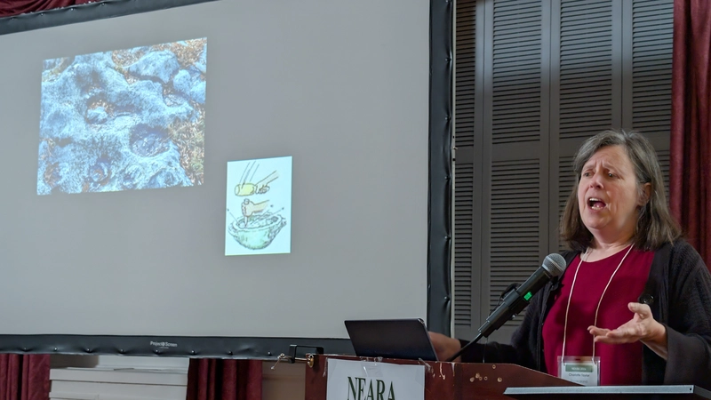
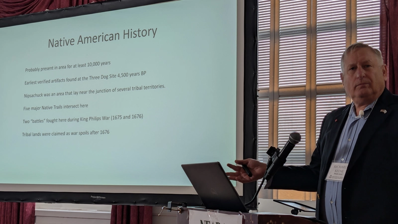
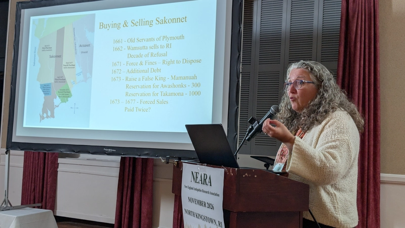
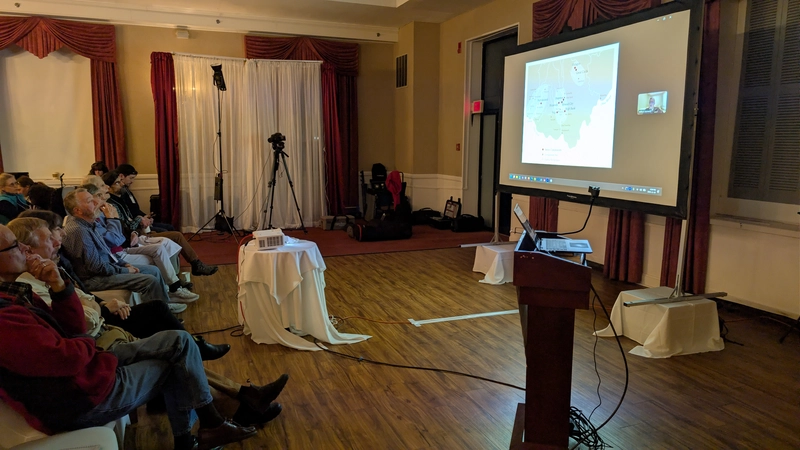
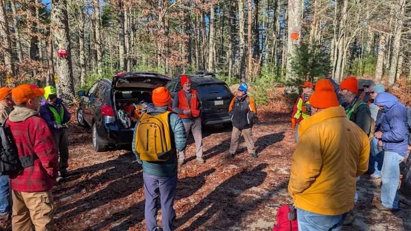
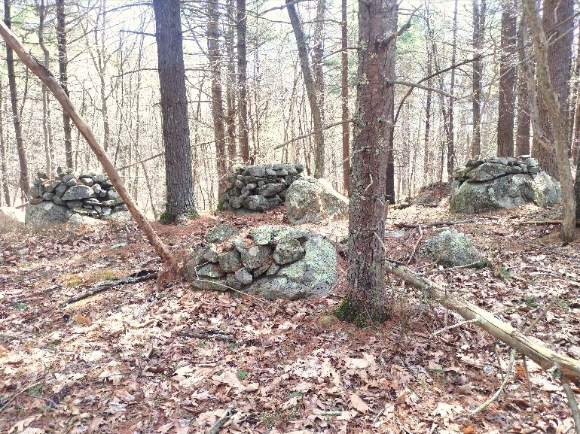

Fall 2026 Conference
The Fall 2026 NEARA Conference was held at the
Quonset O Club
in North Kingstown Rhode Island
from November 13th to November 15th.
View the Fall 2026 Program.
Conference Speakers
The speakers on Friday included:
- Cheryl Stedtler, Project Mishoon: Underwater Treasures of the Nipmuc
- Charlotte Taylor, The Best of Rhode Island Archaeology.
The speakers on Saturday included:
- Rich Keene, Preserving Our Local Heritage
- Perry Donham, Navigating the NEARA Discourse: Connecting, Sharing, and Exploring Research
- Patrick Shekleton, Newport Tower: Past, Present, and Future
- Phil Getty and Walter van Roggen, The Quest for Dates: The History of NEARA's Efforts to Date Stone Structures using Luminescence Dating Technology
- Marjory O'Toole, A New History of the Sakonnet Wampanoag People
Many of our chapter coordinators and committee chairs provided news of recent and future activities.
The keynote speaker after the Saturday banquet was Bill Kennedy, The Hopewell Ceremonial Earthworks.

Charlotte Taylor

Rich Keene

Marjorie O'Toole

Bill Kennedy, via Zoom
Field Trips
Some Friday field trips were were cancelled due to rain, but some proceeded anyway:
- Canonchet Trail, led by Glenn Flosdorf.
- Buck Hill Beehive Chamber, led by Ron Lapierre.
- Long Pond, Ell Pond, and Ashville Pond, led by Jim Hammond.
- Manitou Hassannash Preserve, led by Brian Benoit.
Sunday had great weather. Field trips were at:
- Newport Tower and Museum, led by Jim Egan.
- Big River Preserve, led by Ron Lapierre.
- Parker Woodland, led by Jim Hammond.
- Pelloni Trail, Cougar Effigy, and Tomaquag Shelters, led by Glenn Flosdorf.
 Thoroughly investigating a chamber
Thoroughly investigating a chamber
 At a stream crossing
At a stream crossing

Gathering for the hike with Ron Lapierre

Queens Cairns at Big River Preserve, by Ron Lapierre